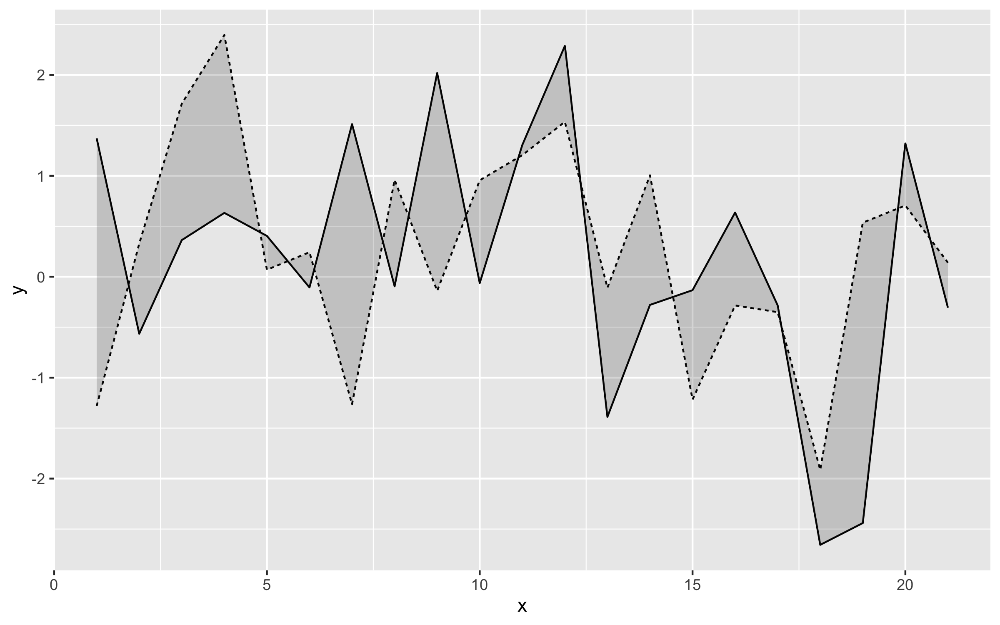
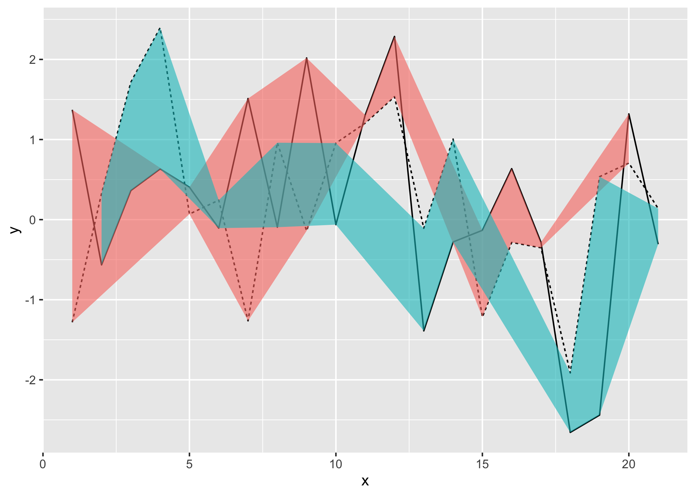
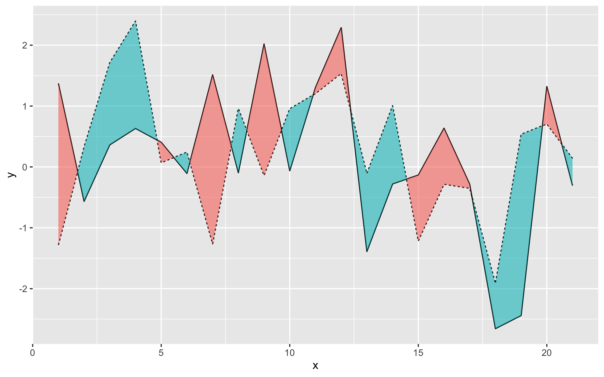

ggbraid provides a new stat, stat_braid(), that extends the functionality of geom_ribbon() to correctly fill the area between two alternating lines (or steps) with two different colors. ggbraid also provides a geom, geom_braid(), that wraps geom_ribbon() and uses stat_braid() by default.
Installation
You can install the development version of ggbraid from GitHub with:
# install.packages("remotes")
remotes::install_github("nsgrantham/ggbraid")Usage
To demonstrate, let’s generate a long dataset with two alternating series.
library(ggplot2)
library(ggbraid)
library(tidyr)
set.seed(42) # for reproducibility
n <- 21
df_long <- tibble(
x = c(1:n, 1:n),
y = c(rnorm(n), rnorm(n, mean = 0.5)),
z = c(rep("a", n), rep("b", n))
)
df_long
#> # A tibble: 42 × 3
#> x y z
#> <int> <dbl> <chr>
#> 1 1 1.37 a
#> 2 2 -0.565 a
#> 3 3 0.363 a
#> 4 4 0.633 a
#> 5 5 0.404 a
#> 6 6 -0.106 a
#> 7 7 1.51 a
#> 8 8 -0.0947 a
#> 9 9 2.02 a
#> 10 10 -0.0627 a
#> # … with 32 more rowsAnd let’s pivot the dataset wider so we can use it with geom_ribbon() and geom_braid().
df_wide <- pivot_wider(df_long, names_from = z, values_from = y)
df_wide
#> # A tibble: 21 × 3
#> x a b
#> <int> <dbl> <dbl>
#> 1 1 1.37 -1.28
#> 2 2 -0.565 0.328
#> 3 3 0.363 1.71
#> 4 4 0.633 2.40
#> 5 5 0.404 0.0695
#> 6 6 -0.106 0.243
#> 7 7 1.51 -1.26
#> 8 8 -0.0947 0.960
#> 9 9 2.02 -0.140
#> 10 10 -0.0627 0.955
#> # … with 11 more rowsNow let’s draw the two series as lines and fill the area between them with a single color using geom_ribbon().
ggplot() +
geom_line(aes(x, y, linetype = z), data = df_long) +
geom_ribbon(aes(x, ymin = a, ymax = b), data = df_wide, alpha = 0.2) +
guides(linetype = "none")
Can we fill the area between the two lines with two different colors? One color when the solid line is above the dashed line, and a different color when the solid line is below the dashed line?
That shouldn’t be hard. Let’s map a < b to the fill aesthetic in geom_ribbon() and…
ggplot() +
geom_line(aes(x, y, linetype = z), data = df_long) +
geom_ribbon(aes(x, ymin = a, ymax = b, fill = a < b), data = df_wide, alpha = 0.6) +
guides(linetype = "none", fill = "none")
Chaos. What happened?
This is the “Unbraided Ribbon Problem”.
Not to worry, we can braid the unbraided ribbon with ggbraid — simply replace geom_ribbon() with geom_braid().
ggplot() +
geom_line(aes(x, y, linetype = z), data = df_long) +
geom_braid(aes(x, ymin = a, ymax = b, fill = a < b), data = df_wide, alpha = 0.6) +
guides(linetype = "none", fill = "none")
#> `geom_braid()` using method = 'line'
Articles
For an introduction to ggbraid and the “Unbraided Ribbon Problem”, see Average Daily Temperatures.
To learn how to use
geom_braid()withgeom_step(), see NBA Finals Game.ggbraid supports flipped aesthetics, see US Supreme Court.